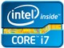
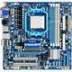
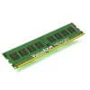
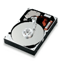
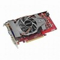
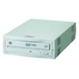
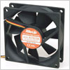
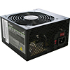
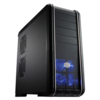
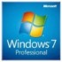

パーツ選び
欲しい性能と予算を決めたらパーツを選びます。
自作PC制作雑誌「WinPC」や価格.comなどを参考にしましょう。
 ▲CPU |
性能が良ければ良い程、パソコンの処理が速くなります。i3,i5,i7,PhenomIIなど。 |
 ▲マザーボード |
パソコンパーツの大部分を接続します。CPUの設置形状がメーカーや種類によって異なるため、CPUに対応したマザボを用意します。 |
 ▲メモリ |
メモリの容量が大きい程、たくさんのデータを短い時間で処理できます。32bitOSは6GBまで、64bitOSは6GB以上も使用出来ます。 |
 ▲長期記憶媒体 |
データの保存場所。容量が多ければ多いほど◎。HDDなら250GB～2TBくらい。HDDより処理が速いSSDも人気が出てきています。 |
 ▲グラフィックボード |
高画質を楽しみたい人はいいやつを買ってください。 |
 ▲DVDドライブ |
メディアを読み込むために必要です。外付け(USB接続)、内蔵取り付けのどちらか。 |
 ▲CPUクーラー |
CPUの熱を外に排出するための必要です。CPUに対応したもの、ケースに収納できる大きさのものを選びます。 |
 ▲電源 |
電源を供給します。PCの性能がよければよいほど大きいワット数が必要になります。平均は500Wくらい。 |
 ▲ケース |
フルタワー、ミニタワー、マイクロタワーなどの種類があり、大きさや形状が違います。小さすぎると熱がこもるのでパーツと照らしあわせてください。 |
 ▲OS |
WindowsかLinux。 |
その他 |
モニタ マウス キーボード |
| ←「どんなPCにするか」へ戻る | 「組み立て」に進む→ |